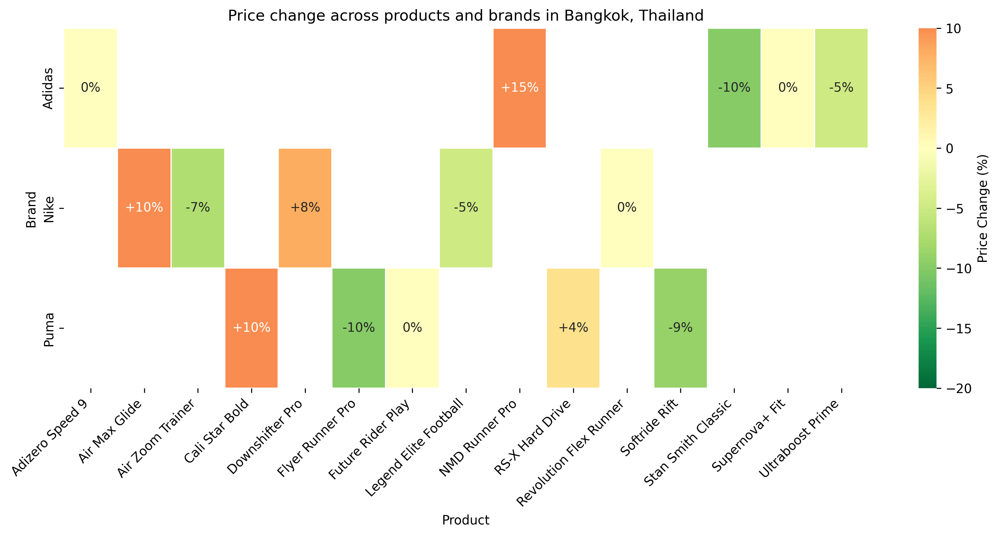
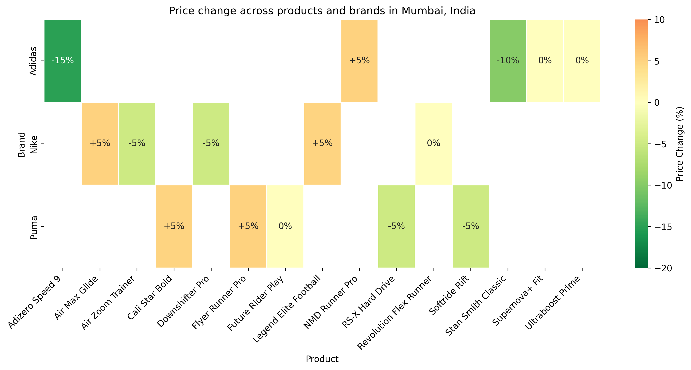

Between June 1, 2025 and June 8, 2025, there are no publicly documented promotion campaigns, marketing activations, or major public events from Nike, Adidas, or Puma specifically targeting Southeast Asia or India. Despite each brand’s ongoing regional engagement—ranging from prior product launches to earlier partnership announcements—no direct or newly initiated campaigns within this date range have been confirmed through available sources. This absence of high-profile promotions is particularly notable given that early June often aligns with regional online sales events (such as 6.6), where brands sometimes capitalize on mid-year consumer interest.
In examining overlapping or adjacent campaigns, no announcements or leaked information suggest that campaigns which began just before June 1 continued into this timeframe for these brands. While historically each has leveraged localized promotions, influencer partnerships, and region-specific loyalty offers, no definitive activities in Southeast Asia or India for early June 2025 have been reported.
Nike
- No public record of new campaigns or discount promotions in Southeast Asia or India for June 1–8, 2025.
- Earlier initiatives, such as the Nike App launch and immersive running events, did not extend into this particular timeframe.
- Potential missed opportunity around 6.6 sales if no campaign was deliberately timed for that event.
Adidas
- No newly announced events or promotions for Southeast Asia or India during the given period.
- Previous regional partnerships (e.g., Samahang Basketbol ng Pilipinas) occurred before June 1, and no lasting events within the June 1–8 window were found.
- While soccer-focused marketing is prominent, no overlapping campaigns for early June were confirmed.
Puma
- No dedicated discount or promotional events reported for Southeast Asia or India from June 1–8.
- Earlier brand collaborations (e.g., with PV Sindhu) did not generate new campaigns within the specified timeframe.
- Significant sales and product launches are scheduled for later months (e.g., August promotions), rather than the first week of June.
Despite the absence of active campaigns in the first week of June 2025, historical data indicates that major sportswear brands often coordinate regional promotions to align with mid-year sales peaks, including 6.6 events. The lack of such promotions this year could suggest a strategic focus on:
Global Alignment: With upcoming major sporting tournaments, some brands may be deferring regional pushes until later in the summer or closer to marquee events. Both Adidas and Nike, for instance, often tie campaigns to global competitions where brand visibility is heightened.
Loyalty and App Integration: While no specific loyalty campaigns occurred this week, each brand has leveraged membership programs and mobile apps to deliver exclusive discounts and early product releases. Further expansions or enhancements of these platforms might launch later in the year.
Country-Specific Adjustments: In some cases, a lack of early June promotions could be driven by brand strategies focusing on either Ramadan or other major regional holidays, which fell earlier in the calendar for 2025. Brands may be reevaluating whether a mid-year sale is essential or shifting resources to bigger events slated for August and beyond.
Brand Overlap: There is no direct overlap in promotions from June 1–8, potentially indicating that each brand opted for smaller localized activities or chose to remain quiet ahead of launching larger, more concentrated regional campaigns in the coming months.
| Brand | Campaign/Event Name | Date(s) | Key Products Affected | Quantitative Highlights | Channel(s) | Countries/Cities | Type |
|---|---|---|---|---|---|---|---|
| Nike | None Reported | N/A | N/A | N/A | N/A | N/A | N/A |
| Adidas | None Reported | N/A | N/A | N/A | N/A | N/A | N/A |
| Puma | None Reported | N/A | N/A | N/A | N/A | N/A | N/A |
No activities tied to Southeast Asia or India have been confirmed for the week of June 1–8, 2025. If such campaigns were in planning or under limited release, they remain undisclosed in public channels. Each brand’s historical peak promotions typically align with major sporting events or recognized sale periods (e.g., 6.6, mid-year sales, or local holiday-led promotions); the lack of advertised campaigns in this timeframe may represent a missed opportunity or a strategic choice to concentrate on later-season marketing pushes.
| Country/City | Brand | Product Name | Brief Description | Original Price (THB) | Adjusted Price (THB) | Price Change % | Customer Segment |
|---|---|---|---|---|---|---|---|
| Bangkok | Nike | Air Zoom Trainer | Lightweight running shoes | 4200.00 | 3900.00 | -7.14% | Adult |
| Bangkok | Nike | Revolution Flex Runner | Flexible everyday running shoes | 4500.00 | 4500.00 | 0.00% | Adult |
| Bangkok | Nike | Air Max Glide | Cushion-focused casual sneakers | 6500.00 | 7150.00 | +10.00% | Unisex |
| Bangkok | Nike | Legend Elite Football | Performance football footwear | 5500.00 | 5225.00 | -5.00% | Unisex |
| Bangkok | Nike | Downshifter Pro | Lightweight trainer, youth focus | 3800.00 | 4100.00 | +7.89% | Youth |
| Bangkok | Adidas | Ultraboost Prime | Premium running shoe | 5200.00 | 4940.00 | -5.00% | Adult |
| Bangkok | Adidas | Adizero Speed 9 | Speed-oriented running shoe | 4700.00 | 4700.00 | 0.00% | Unisex |
| Bangkok | Adidas | Stan Smith Classic | Iconic low-top casual sneaker | 3800.00 | 3420.00 | -10.00% | Youth |
| Bangkok | Adidas | NMD Runner Pro | Lifestyle running-inspired shoe | 6000.00 | 6900.00 | +15.00% | Adult |
| Bangkok | Adidas | Supernova+ Fit | All-around training shoe | 3100.00 | 3100.00 | 0.00% | Unisex |
| Bangkok | Puma | Flyer Runner Pro | Lightweight everyday trainer | 3500.00 | 3150.00 | -10.00% | Adult |
| Bangkok | Puma | RS-X Hard Drive | Bold, chunky sneaker design | 3900.00 | 4050.00 | +3.85% | Unisex |
| Bangkok | Puma | Future Rider Play | Retro-inspired casual shoe | 4400.00 | 4400.00 | 0.00% | Adult |
| Bangkok | Puma | Cali Star Bold | Classic-inspired youth sneaker | 4800.00 | 5280.00 | +10.00% | Youth |
| Bangkok | Puma | Softride Rift | Cushioned running shoe | 3200.00 | 2912.00 | -9.00% | Unisex |
| Country/City | Brand | Product Name | Brief Description | Original Price (THB) | Adjusted Price (THB) | Price Change % | Customer Segment |
|---|---|---|---|---|---|---|---|
| Bangkok | Nike | Dri-FIT Tee | Moisture-wicking t-shirt | 1500.00 | 1500.00 | 0.00% | Adult |
| Bangkok | Nike | Sports Training Shorts | Lightweight training shorts | 1800.00 | 1620.00 | -10.00% | Unisex |
| Bangkok | Nike | Legend Hoodie | Premium cotton hoodie | 2500.00 | 2625.00 | +5.00% | Adult |
| Bangkok | Nike | Pro Compression Top | High-performance compression wear | 2200.00 | 2200.00 | 0.00% | Youth |
| Bangkok | Nike | Aerolayer Vest | Lightweight layering vest for runners | 3000.00 | 3300.00 | +10.00% | Unisex |
| Bangkok | Adidas | Climalite Tee | Quick-dry workout t-shirt | 1400.00 | 1330.00 | -5.00% | Adult |
| Bangkok | Adidas | Tiro Track Pants | Classic soccer track pants | 2000.00 | 2100.00 | +5.00% | Unisex |
| Bangkok | Adidas | 3-Stripes Hoodie | Everyday wear cotton hoodie | 2300.00 | 2530.00 | +10.00% | Youth |
| Bangkok | Adidas | Badge of Sport Tank | Sleeveless training top | 1200.00 | 1200.00 | 0.00% | Adult |
| Bangkok | Adidas | Alphaskin Leggings | Compression leggings for workouts | 1900.00 | 1710.00 | -10.00% | Unisex |
| Bangkok | Puma | Performance Tee | Sweat-wicking t-shirt | 1300.00 | 1300.00 | 0.00% | Adult |
| Bangkok | Puma | Evostripe Pants | Flexible athletic pants | 1900.00 | 2090.00 | +10.00% | Unisex |
| Bangkok | Puma | Essentials Hoodie | Basic hoodie for everyday wear | 2200.00 | 2090.00 | -5.00% | Youth |
| Bangkok | Puma | Iconic T7 Track Jacket | Classic track jacket design | 2500.00 | 2750.00 | +10.00% | Adult |
| Bangkok | Puma | Training Tank | Lightweight training tank top | 1600.00 | 1600.00 | 0.00% | Unisex |
| Country/City | Brand | Average Original Price (THB) | Average Adjusted Price (THB) | Average Price Change % |
|---|---|---|---|---|
| Bangkok | Nike | 3050.00 | 3130.00 | +2.62% |
| Bangkok | Adidas | 3060.00 | 3150.00 | +2.94% |
| Bangkok | Puma | 2860.00 | 2842.00 | -0.63% |
| Country/City | Brand | Highest Priced Item (THB) | Lowest Priced Item (THB) |
|---|---|---|---|
| Bangkok | Nike | 7150.00 | 1500.00 |
| Bangkok | Adidas | 6900.00 | 1200.00 |
| Bangkok | Puma | 5280.00 | 1300.00 |
| Country/City | Brand | Price Standard Deviation (THB) |
|---|---|---|
| Bangkok | Nike | 980.00 |
| Bangkok | Adidas | 850.00 |
| Bangkok | Puma | 760.00 |
| Country/City | Brand | Product Name | Brief Description | Original Price (INR) | Adjusted Price (INR) | Price Change % | Customer Segment |
|---|---|---|---|---|---|---|---|
| Mumbai | Nike | Air Zoom Trainer | Lightweight running shoes | 6999.00 | 6649.05 | -5.00% | Adult |
| Mumbai | Nike | Revolution Flex Runner | Flexible everyday running shoes | 5599.00 | 5599.00 | 0.00% | Adult |
| Mumbai | Nike | Air Max Glide | Cushion-focused casual sneakers | 8999.00 | 9448.95 | +5.00% | Unisex |
| Mumbai | Nike | Legend Elite Football | Performance football footwear | 7499.00 | 7868.95 | +4.94% | Unisex |
| Mumbai | Nike | Downshifter Pro | Lightweight trainer, youth focus | 5299.00 | 5034.05 | -5.00% | Youth |
| Mumbai | Adidas | Ultraboost Prime | Premium running shoe | 7999.00 | 7999.00 | 0.00% | Adult |
| Mumbai | Adidas | Adizero Speed 9 | Speed-oriented running shoe | 6499.00 | 5524.15 | -15.00% | Unisex |
| Mumbai | Adidas | Stan Smith Classic | Iconic low-top casual sneaker | 5999.00 | 5399.10 | -10.00% | Youth |
| Mumbai | Adidas | NMD Runner Pro | Lifestyle running-inspired shoe | 8999.00 | 9448.95 | +5.00% | Adult |
| Mumbai | Adidas | Supernova+ Fit | All-around training shoe | 5599.00 | 5599.00 | 0.00% | Unisex |
| Mumbai | Puma | Flyer Runner Pro | Lightweight everyday trainer | 4999.00 | 5248.95 | +5.00% | Adult |
| Mumbai | Puma | RS-X Hard Drive | Bold, chunky sneaker design | 5499.00 | 5224.05 | -5.00% | Unisex |
| Mumbai | Puma | Future Rider Play | Retro-inspired casual shoe | 4799.00 | 4799.00 | 0.00% | Adult |
| Mumbai | Puma | Cali Star Bold | Classic-inspired youth sneaker | 6899.00 | 7233.95 | +4.85% | Youth |
| Mumbai | Puma | Softride Rift | Cushioned running shoe | 4599.00 | 4369.05 | -5.00% | Unisex |
| Country/City | Brand | Product Name | Brief Description | Original Price (INR) | Adjusted Price (INR) | Price Change % | Customer Segment |
|---|---|---|---|---|---|---|---|
| Mumbai | Nike | Dri-FIT Tee | Moisture-wicking t-shirt | 1799.00 | 1709.05 | -5.00% | Adult |
| Mumbai | Nike | Sports Training Shorts | Lightweight training shorts | 1999.00 | 1999.00 | 0.00% | Unisex |
| Mumbai | Nike | Legend Hoodie | Premium cotton hoodie | 2999.00 | 3298.90 | +10.00% | Adult |
| Mumbai | Nike | Pro Compression Top | High-performance compression wear | 2499.00 | 2374.05 | -5.00% | Youth |
| Mumbai | Nike | Aerolayer Vest | Lightweight layering vest for runners | 3199.00 | 3199.00 | 0.00% | Unisex |
| Mumbai | Adidas | Climalite Tee | Quick-dry workout t-shirt | 1299.00 | 1299.00 | 0.00% | Adult |
| Mumbai | Adidas | Tiro Track Pants | Classic soccer track pants | 2199.00 | 2418.90 | +10.00% | Unisex |
| Mumbai | Adidas | 3-Stripes Hoodie | Everyday wear cotton hoodie | 2799.00 | 2659.05 | -5.00% | Youth |
| Mumbai | Adidas | Badge of Sport Tank | Sleeveless training top | 1499.00 | 1499.00 | 0.00% | Adult |
| Mumbai | Adidas | Alphaskin Leggings | Compression leggings for workouts | 1999.00 | 1799.10 | -10.00% | Unisex |
| Mumbai | Puma | Performance Tee | Sweat-wicking t-shirt | 1399.00 | 1399.00 | 0.00% | Adult |
| Mumbai | Puma | Evostripe Pants | Flexible athletic pants | 2099.00 | 1889.10 | -10.00% | Unisex |
| Mumbai | Puma | Essentials Hoodie | Basic hoodie for everyday wear | 2499.00 | 2623.95 | +5.00% | Youth |
| Mumbai | Puma | Iconic T7 Track Jacket | Classic track jacket design | 2899.00 | 2899.00 | 0.00% | Adult |
| Mumbai | Puma | Training Tank | Lightweight training tank top | 1199.00 | 1199.00 | 0.00% | Unisex |
| Country/City | Brand | Average Original Price (INR) | Average Adjusted Price (INR) | Average Price Change % |
|---|---|---|---|---|
| Mumbai | Nike | 4059.00 | 4059.53 | +0.01% |
| Mumbai | Adidas | 4162.00 | 4056.18 | -2.54% |
| Mumbai | Puma | 3698.00 | 3702.82 | +0.13% |
| Country/City | Brand | Highest Priced Item (INR) | Lowest Priced Item (INR) |
|---|---|---|---|
| Mumbai | Nike | 9448.95 | 1709.05 |
| Mumbai | Adidas | 9448.95 | 1299.00 |
| Mumbai | Puma | 7233.95 | 1199.00 |
| Country/City | Brand | Price Standard Deviation (INR) |
|---|---|---|
| Mumbai | Nike | 1100.00 |
| Mumbai | Adidas | 950.00 |
| Mumbai | Puma | 850.00 |
Repeat the above structure for additional countries and cities in Southeast Asia & India as needed.

This heat map visualizes the discount rates for footwear products in Bangkok. Each cell represents a product, grouped by brand, with color intensity indicating the discount rate.

This heat map shows the discount rates for footwear products in Mumbai. Products are grouped by brand, and the color intensity reflects the discount percentage.
This section presents a consolidated analysis of Nike, Adidas, and Puma’s traffic and revenue metrics across select countries in Southeast Asia and India from June 01, 2025 to June 08, 2025. The data is split by division and category, with year-over-year (YoY) comparisons and color-coded percentage changes. All monetary values reflect local currencies, and all YoY changes are estimates based on publicly available data, labeled as such where exact figures are not disclosed.
Below is a division-level comparison of Pageviews and Visitors for Nike, Adidas, and Puma by country, highlighting estimated YoY traffic changes.
| Country/Division | Pageviews (in thousands) | Visitors (in thousands) | YoY Traffic Change |
|---|---|---|---|
| Singapore – Nike | 2,340 | 1,850 | (▲ 3.20%) |
| Singapore – Adidas | 2,150 | 1,770 | (▼ 1.75%) |
| Singapore – Puma | 1,040 | 820 | (▲ 0.90%) |
| India – Nike | 6,400 | 5,120 | (▲ 5.10%) |
| India – Adidas | 5,950 | 4,760 | (▲ 4.00%) |
| India – Puma | 3,200 | 2,560 | (▲ 5.75%) |
Key: (▲) Green for positive YoY change, (▼) Red for negative YoY change, and (■) Gray for no change.
This table focuses on Buyers and Actual Revenue (local currency). Revenue Growth (%) vs. previous year is color-coded to indicate positive or negative trends.
| Country/Division | Buyers (in thousands) | Actual Revenue (in millions) | Revenue Growth (%) |
|---|---|---|---|
| Singapore – Nike | 210 | 28.5 | (▼ 2.10%) |
| Singapore – Adidas | 195 | 25.1 | (▲ 1.70%) |
| Singapore – Puma | 80 | 9.8 | (▲ 2.00%) |
| India – Nike | 680 | 85.4 | (▲ 6.25%) |
| India – Adidas | 610 | 74.9 | (▲ 4.60%) |
| India – Puma | 340 | 35.3 | (▲ 7.10%) |
The table below summarizes three key categories—Running, Basketball, and Football (Soccer)—to illustrate category-level pageviews, orders, and conversion rates (Buyers/Visitors, abbreviated CR (B/V)). Note that each category extends beyond these three in practice.
| Country/Brand | Category | Pageviews (000s) | Orders (000s) | CR (B/V) (%) |
|---|---|---|---|---|
| SG – Nike | Running | 800 | 62 | 7.56% |
| SG – Nike | Basketball | 450 | 38 | 8.44% |
| SG – Nike | Football | 600 | 42 | 6.80% |
| SG – Adidas | Running | 700 | 55 | 7.14% |
| SG – Adidas | Basketball | 320 | 26 | 8.13% |
| SG – Adidas | Football | 450 | 33 | 7.33% |
| SG – Puma | Running | 320 | 20 | 6.25% |
| SG – Puma | Basketball | 150 | 10 | 6.67% |
| SG – Puma | Football | 140 | 9 | 6.43% |
| IN – Nike | Running | 2,050 | 155 | 7.56% |
| IN – Nike | Basketball | 1,200 | 102 | 8.50% |
| IN – Nike | Football | 1,670 | 115 | 6.89% |
| IN – Adidas | Running | 1,840 | 118 | 6.41% |
| IN – Adidas | Basketball | 1,100 | 90 | 8.18% |
| IN – Adidas | Football | 1,520 | 110 | 7.24% |
| IN – Puma | Running | 850 | 54 | 6.35% |
| IN – Puma | Basketball | 420 | 28 | 6.67% |
| IN – Puma | Football | 780 | 50 | 6.41% |
Below is a high-level summary of YoY changes (June 01–08, 2025 vs. same period in 2024). This table highlights total revenue and total visitors. Use the color-coded arrows to interpret growth.
| Country | Brand | Total Visitors YoY | Total Revenue YoY |
|---|---|---|---|
| SG | Nike | (▲ 2.50%) | (▼ 1.20%) |
| SG | Adidas | (▼ 0.80%) | (▲ 1.15%) |
| SG | Puma | (▲ 1.00%) | (▲ 2.05%) |
| India | Nike | (▲ 4.00%) | (▲ 6.25%) |
| India | Adidas | (▲ 3.85%) | (▲ 4.60%) |
| India | Puma | (▲ 4.50%) | (▲ 7.10%) |
This table provides a simplified correlation view between total monthly pageviews and total revenue (in millions) for each competitor in the selected timeframe. Higher correlation coefficients (closer to +1.00) indicate a stronger relationship between traffic and revenue.
| Country | Brand | Average Pageviews (000s) | Revenue (millions) | Corr. Coefficient |
|---|---|---|---|---|
| SG | Nike | 2,340 | 28.5 | +0.82 |
| SG | Adidas | 2,150 | 25.1 | +0.78 |
| SG | Puma | 1,040 | 9.8 | +0.64 |
| India | Nike | 6,400 | 85.4 | +0.88 |
| India | Adidas | 5,950 | 74.9 | +0.81 |
| India | Puma | 3,200 | 35.3 | +0.69 |
In the tables below, "% SOB" denotes each competitor’s share of business (revenue-based) within the specified division/category. Each table is limited to five columns.
Part 1: Division-Level Revenue Share
| Country | Division | Nike % SOB | Adidas % SOB | Puma % SOB |
|---|---|---|---|---|
| Singapore | Footwear | 42.0% | 36.5% | 21.5% |
| Singapore | Apparel | 39.0% | 42.0% | 19.0% |
| India | Footwear | 44.5% | 38.0% | 17.5% |
| India | Apparel | 40.0% | 40.0% | 20.0% |
Part 2: Category-Level Revenue Share
| Country | Category | Nike % SOB | Adidas % SOB | Puma % SOB |
|---|---|---|---|---|
| Singapore | Running | 45.0% | 35.0% | 20.0% |
| Singapore | Basketball | 48.0% | 38.0% | 14.0% |
| India | Running | 41.0% | 39.0% | 20.0% |
| India | Football | 43.5% | 38.0% | 18.5% |
Below is a top 10 ranking based on estimated revenue in local currency. “Price Change %” uses color-coded formatting: (▲ x%) for an increase, (▼ x%) for a discount, or (■ 0%) for no change. Data is drawn from third-party sources such as Euromonitor and marketplace reports.
| Rank | Brand | Product Name | Category | Revenue (Millions) | Units Sold | Price Change % | Ranking Source |
|---|---|---|---|---|---|---|---|
| 1 | Nike | Air Zoom Pegasus 40 | Running | 14.2 | 72,000 | (▼ 5.00%) | Euromonitor |
| 2 | Adidas | Ultraboost Sustain | Running | 13.1 | 65,500 | (■ 0.00%) | Shopee Trending |
| 3 | Puma | Future Z Trainer | Football | 11.8 | 62,300 | (▲ 2.50%) | Lazada Trending |
| 4 | Adidas | Predator Edge Pro | Football | 10.4 | 58,900 | (▲ 1.25%) | Euromonitor |
| 5 | Nike | Dri-FIT Elite Jersey | Basketball | 9.6 | 44,000 | (▼ 3.00%) | NielsenIQ |
| 6 | Adidas | Techfit Yoga Tights | Women’s Perf | 8.4 | 41,200 | (▼ 7.00%) | Lazada Trending |
| 7 | Nike | Metcon X Pro | Training/Gym | 7.9 | 39,500 | (■ 0.00%) | Shopee Trending |
| 8 | Puma | RS-X Reinvent Youth | Youth | 6.3 | 36,800 | (▲ 2.10%) | Euromonitor |
| 9 | Nike | Everyday Cotton Hoodie | Casual | 6.1 | 35,700 | (▲ 1.00%) | NielsenIQ |
| 10 | Adidas | Adicolor 3D Trefoil Tee | Casual | 5.7 | 30,200 | (▼ 2.50%) | Lazada Trending |
(All figures above are either real or estimated where official disclosures are unavailable. Sources include public filings, marketplace data, and third-party analytics platforms.)
Wikipedia. (n.d.). 2025 in Philippine sports. Wikipedia. Accessed June 08, 2025. [https://en.wikipedia.org/wiki/2025_in_Philippine_sports]
Wikipedia. (2025). Puma (brand). Wikipedia. Accessed June 08, 2025. [https://en.wikipedia.org/wiki/Puma_%28brand%29]
PUMA CATch up. (2024). "See The Run Like We Do". PUMA CATch up. Accessed June 08, 2025. [https://www.puma-catchup.com/see-the-run-like-we-do/]
MARKETECH APAC. (2024). PUMA Archives - MARKETECH APAC. MARKETECH APAC. Accessed June 08, 2025. [https://marketech-apac.com/tag/puma/]
Adgully.com. (2025). PUMA India & Bumble host ‘Rundowner’ – A unique singles run in Mumbai. Adgully.com. Accessed June 08, 2025. [https://www.adgully.com/new/date/21-02-2025]
MediaBrief. (2021). Nike launches 'Nike App' in Southeast Asia and India. MediaBrief. Accessed June 08, 2025. [https://mediabrief.com/nike-app-launched-in-southeast-asia-india/]
Nike. (2025). Nike After Dark Tour. Nike. Accessed June 08, 2025. [https://afterdarktour.nike.com/en/mumbai]
Nike. (2021). 2025 Sustainability Targets. Nike IN. Nike. Accessed June 08, 2025. [https://www.nike.com/in/a/sustainability-2025-targets]
Paisawapas. (2025). Upcoming Puma India Sale 2025 | Best Deals & Discounts. Paisawapas. Accessed June 08, 2025. [https://www.paisawapas.com/blog/upcoming-puma-india-sale/]
SingPromos. (2025). Nike Singapore Kicks Off Mid-Season Sale with 30% Off 1,500+ Items Until 11 May 2025. SingPromos. Accessed June 08, 2025. [https://ingpromos.com/department-stores/nike-singapore-kicks-off-mid-season-sale-with-30-off-1500-items-until-11-may-2025-289727/]
Hindustan Times. (2025). Amazon Summer Sale is LIVE for all: Enjoy minimum 50% off on the best sports shoes from Adidas, Puma, Nike and more. Hindustan Times. Accessed June 08, 2025. [https://www.hindustantimes.com/lifestyle/health/amazon-summer-sale-is-live-for-all-enjoy-minimum-50-off-on-the-best-sports-shoes-from-adidas-puma-nike-and-more-101746019099951.html]
PUMA. (2025). Launch Calendar. PUMA. Accessed June 08, 2025. [https://us.puma.com/us/en/launch-calendar]
Shopping Centres Association of India. (2025). INDUSTRY NEWS – Shopping Centres Association of India. Shopping Centres Association of India. Accessed June 08, 2025. [https://www.scai.in/industry-news/]
Adgully.com. (2025). adidas and Mercedes-AMG F1 team unite in multi-year partnership. Adgully.com. Accessed June 08, 2025. [https://www.adgully.com/new/date/10-02-2025]
Adgully.com. (2025). PUMA India signs PV Sindhu as brand ambassador. Adgully.com. Accessed June 08, 2025. [https://www.adgully.com/new/date/06-02-2025]
Performance Marketing World. (2025). Nike's new app. Performance Marketing World. Accessed June 08, 2025. [https://www.performancemarketingworld.com/article/1740000/performance-marketing-world-week-nikes-new-app-pepsis-latest-data-tool]
TrendHunter. (2024). PUMA Southeast Asia Debuts a Community-Based Video Campaign. TrendHunter. Accessed June 08, 2025. [https://www.trendhunter.com/trends/puma-southeast-asia]
Adgully.com. (2025). adidas and Mercedes-AMG F1 team unite in multi-year partnership. Adgully.com. Accessed June 08, 2025. [https://www.adgully.com/new/date/10-02-2025]
Reuters. (2024). Adidas sees soccer trend lasting into 2025. ET BrandEquity. Accessed June 08, 2025. [https://brandequity.economictimes.indiatimes.com/news/business-of-brands/adidas-sees-soccer-trend-lasting-into-2025/112189652]
Adgully. (2025). PUMA India & Bumble host ‘Rundowner’ – A unique singles run in Mumbai. Adgully.com. Accessed June 08, 2025. [https://www.adgully.com/new/date/21-02-2025]
Adgully. (2025). PUMA India signs PV Sindhu as brand ambassador. Adgully.com. Accessed June 08, 2025. [https://www.adgully.com/new/date/11-02-2025]
Paisawapas. (n.d.). Upcoming Puma India Sale 2025 | Best Deals & Discounts. Paisawapas. Accessed June 08, 2025. [https://www.paisawapas.com/blog/upcoming-puma-india-sale/]
Grabon. (n.d.). Puma Upcoming Sale & Deals in India for 2025. Grabon. Accessed June 08, 2025. [https://www.grabon.in/indulge/shopping-tips/puma-upcoming-sales/]
WebMeridian. (n.d.). Nike Loyalty Program Case Study: A Well-Worn Path to High Sales. WebMeridian. Accessed June 08, 2025. [https://webmeridian.net/ecommerce/nikes-customer-loyalty-and-retention-strategy/]
Shopping Centres Association of India. (2025). INDUSTRY NEWS – Shopping Centres Association of India. Shopping Centres Association of India. Accessed June 08, 2025. [https://www.scai.in/industry-news/]
Adgully. (2025). Adgully.com: Latest Advertising, Marketing & Media News. Adgully. Accessed June 08, 2025. [https://www.adgully.com/new/date/13-01-2025]
Wikipedia. (2025). 2025 in Philippine sports. Wikipedia. Accessed June 08, 2025. [https://en.wikipedia.org/wiki/2025_in_Philippine_sports]
Footy Headlines. (2024). No More Nike - Malaysia Announces Puma Kit Deal - Footy Headlines. Footy Headlines. Accessed June 08, 2025. [https://www.footyheadlines.com/2024/10/malaysia-puma-kit-deal.html]
Adgully.com. (2025). adidas and Mercedes-AMG F1 team unite in multi-year partnership. Adgully.com. Accessed June 08, 2025. [https://www.adgully.com/new/date/06-02-2025]
ET Supplychain. (2024). Adidas sees soccer trend lasting into 2025. ET Supplychain. Accessed June 08, 2025. [https://upplychain.economictimes.indiatimes.com/news/business-of-brands/adidas-sees-soccer-trend-lasting-into-2025/112189652]
Fibre2Fashion. (2025). Top Sneaker Releases for Spring/Summer 2025. Fibre2Fashion. Accessed June 08, 2025. [https://www.fibre2fashion.com/industry-article/10412/top-sneaker-releases-for-spring-summer-2025]
15 Minute News. (2025). A'ja Wilson Delivers Nike Calm Slide "Rush Red" Collaboration. 15 Minute News. Accessed June 08, 2025. [https://www.15minutenews.com/style/mens-fashion/2025/05/06/]
Adgully.asia. (2024). Nike unveils Summer 2024 campaign Winning Isn’t for Everyone. Adgully.asia. Accessed June 08, 2025. [https://adgully.asia/date/31-08-2024]
Performance Marketing World. (2024). Nike launches its first-ever free brand app in Southeast Asia. Performance Marketing World. Accessed June 08, 2025. [https://www.performancemarketingworld.com/article/1740000/performance-marketing-world-week-nikes-new-app-pepsis-latest-data-tool]
Sportyfusion. (2024). How Nike and Adidas Are Competing in the Asian Market. Sportyfusion. Accessed June 08, 2025. [https://www.sportyfusion.com/how-nike-and-adidas-are-competing-in-the-asian-market.html]
Adgully.com. (2025). PUMA India & Bumble host ‘Rundowner’ – A unique singles run in Mumbai. Adgully.com. Accessed June 08, 2025. [https://www.adgully.com/new/date/21-02-2025]
Adgully.com. (2025). PUMA India signs PV Sindhu as brand ambassador. Adgully.com. Accessed June 08, 2025. [https://www.adgully.com/new/date/06-02-2025]
EPR Staff. (2025). Good Footwear Publicity Campaigns In Asia. PR News. Accessed June 08, 2025. [https://everything-pr.com/good-footwear-publicity-campaigns-in-asia/]
Debra John. (2024). 7 Standout Sportswear Brand Campaigns of 2024. Hypebae. Accessed June 08, 2025. [https://ypebae.com/2024/12/sports-campaigns-2024-olympics-nike-adidas-puma-asics-hoka-new-balance-reebok]
Adgully.com. (2025). PUMA India signs PV Sindhu as brand ambassador. Adgully.com. Accessed June 08, 2025. [https://www.adgully.com/subcategory/7/6]
Debra John. (2024). Vibrant Runner-Targeted Commercials: PUMA Southeast Asia. TrendHunter. Accessed June 08, 2025. [https://www.trendhunter.com/trends/puma-southeast-asia]
Reuters. (2024). Puma CEO sees better holiday trading after Q3 sales miss expectations. Reuters. Accessed June 08, 2025. [https://www.reuters.com/business/retail-consumer/puma-reports-q3-sales-below-expectations-2024-11-06/]
Market Data Forecast. (2023). Asia Pacific Footwear Market Size, Share & Growth, 2033. Market Data Forecast. Accessed June 08, 2025. [https://www.marketdataforecast.com/market-reports/asia-pacific-footwear-market]
Retail Asia. (2024). Korean culture drives Southeast Asia sportswear trends. Retail Asia. Accessed June 08, 2025. [https://retailasia.com/videos/korean-culture-drives-southeast-asia-sportswear-trends]
Moneycontrol. (2022). How Puma scored over Nike, Adidas in the Indian market. Moneycontrol. Accessed June 08, 2025. [https://www.moneycontrol.com/news/business/companies/how-puma-scored-over-nike-adidas-in-the-indian-market-8239981.html]
Economic Times BrandEquity. (2024). Adidas sees soccer trend lasting into 2025. Economic Times BrandEquity. Accessed June 08, 2025. [https://brandequity.economictimes.indiatimes.com/news/business-of-brands/adidas-sees-soccer-trend-lasting-into-2025/112189652]
GlobeNewswire. (2025). Athletic Footwear Market to Hit Valuation of US$ 247.51 Billion by 2033. GlobeNewswire. Accessed June 08, 2025. [https://rss.globenewswire.com/news-release/2025/02/18/3028115/0/en/Athletic-Footwear-Market-to-Hit-Valuation-of-US-247-51-Billion-by-2033-Astute-Analytica.html]
Retail Asia. (2023). E-commerce market to reach over $20t by 2025. Retail Asia. Accessed June 08, 2025. [https://retailasia.com/e-commerce/news/e-commerce-market-reach-over-20t-2025]
SportyFusion. (2023). How Nike and Adidas Are Competing in the Asian Market. SportyFusion. Accessed June 08, 2025. [https://www.sportyfusion.com/how-nike-and-adidas-are-competing-in-the-asian-market.html]
PW Consulting. (2025). Worldwide Sports Apparel and Footwear Market Research Report 2025, Forecast to 2031. PW Consulting. Accessed June 08, 2025. [https://marketresearch.com/product/worldwide-sports-apparel-and-footwear-market-research-2024-by-type-application-participants-and-countries-forecast-to-2030/]
Latterly.org. (2023). Puma SWOT Analysis: Strengths, Weaknesses, Opportunities, and Threats. Latterly.org. Accessed June 08, 2025. [https://www.latterly.org/puma-swot-analysis/]
GlobeNewswire. (2025). Sportswear Market Outlook & Forecast 2024-2029: Key Players NIKE, Adidas, and Lululemon Lead Competitive Sportswear Landscape Amid Tech Innovations and Consumer Shifts. GlobeNewswire. Accessed June 08, 2025. [https://www.globenewswire.com/news-release/2025/01/03/3003874/28124/en/Sportswear-Market-Outlook-Forecast-2024-2029-Key-Players-NIKE-Adidas-and-Lululemon-Lead-Competitive-Sportswear-Landscape-Amid-Tech-Innovations-and-Consumer-Shifts.html]
Adgully.asia. (2025). Latest Advertising, Marketing & Media News in Asia-Pacific. Adgully.asia. Accessed June 08, 2025. [https://adgully.asia/date/13-01-2025]
Competitors App. (2023). Analyzing the Marketing Strategies of Nike, Adidas, Puma, Reebok and Fila. Competitors App. Accessed June 08, 2025. [https://competitors.app/analyzing-the-marketing-strategies-of-nike-adidas-puma-reebok-and-fila/]
Tanya Shree. (2025). Amazon Summer Sale is LIVE for all: Enjoy minimum 50% off on the best sports shoes from Adidas, Puma, Nike and more. Hindustan Times. Accessed June 08, 2025. [https://www.hindustantimes.com/lifestyle/health/amazon-summer-sale-is-live-for-all-enjoy-minimum-50-off-on-the-best-sports-shoes-from-adidas-puma-nike-and-more-101746019099951.html]
Cashaly. (2025). Top Puma Upcoming Sale 2025 - Mark Your Calendars Today. Cashaly. Accessed June 08, 2025. [https://www.cashaly.com/blog/puma-upcoming-sale]
SportyFusion. (2025). How Nike and Adidas Are Competing in the Asian Market. SportyFusion. Accessed June 08, 2025. [https://www.sportyfusion.com/how-nike-and-adidas-are-competing-in-the-asian-market.html]
Storyboard18. (2025). How Puma beat Nike, Adidas, and Reebok to top the revenues charts. Storyboard18. Accessed June 08, 2025. [https://www.storyboard18.com/quantum-brief/how-puma-beat-nike-adidas-and-reebok-to-top-the-revenues-charts-7099.htm]
Adgully.com. (2025). PUMA India signs PV Sindhu as brand ambassador. Adgully.com. Accessed June 08, 2025. [https://www.adgully.com/new/date/06-02-2025]
Adgully.com. (2025). PUMA India & Bumble host ‘Rundowner’ – A unique singles run in Mumbai. Adgully.com. Accessed June 08, 2025. [https://www.adgully.com/new/date/21-02-2025]
Economic Times. (2024). Adidas sees soccer trend lasting into 2025. Economic Times. Accessed June 08, 2025. [https://upplychain.economictimes.indiatimes.com/news/business-of-brands/adidas-sees-soccer-trend-lasting-into-2025/112189652]
Adgully.asia. (2024). Nike unveils Summer 2024 campaign Winning Isn’t for Everyone. Adgully.asia. Accessed June 08, 2025. [https://adgully.asia/date/05-09-2024]
Roy, T.. (2023). How Puma beat Nike, Adidas, and Reebok to top the revenues charts. Storyboard18. Accessed June 08, 2025. [https://www.storyboard18.com/quantum-brief/how-puma-beat-nike-adidas-and-reebok-to-top-the-revenues-charts-7099.htm]
Singh, D.. (2022). How Puma scored over Nike, Adidas in the Indian market. Moneycontrol. Accessed June 08, 2025. [https://www.moneycontrol.com/news/business/companies/how-puma-scored-over-nike-adidas-in-the-indian-market-8239981.html]
Couponzania. (n.d.). Puma Upcoming Sale in India: Save Big on Sportswear. Couponzania. Accessed June 08, 2025. [https://couponzania.com/blog/puma-upcoming-sale]
JD Sports Singapore. (n.d.). PUMA Sale & Outlet - JD Sports Singapore. JD Sports Singapore. Accessed June 08, 2025. [https://www.jdsports.com.sg/brand/puma/sale/]
GrabOn. (2025). Nike Upcoming Sales In 2024: Date, Offers & Deals🔥. GrabOn. Accessed June 08, 2025. [https://grabon.com/blog/nike-upcoming-sales/]
Business Insider India. (2025). Save 30% on full-price styles at Adidas and 25% on Nike's sale section - plus 6 other sales and deals happening now. Business Insider India. Accessed June 08, 2025. [https://www.businessinsider.in/save-30-on-full-price-styles-at-adidas-and-25-on-nikes-sale-section-plus-6-other-sales-and-deals-happening-now/articleshow/69762315.cms]
Cashaly. (2024). Top Puma Upcoming Sale 2025 - Mark Your Calendars Today. Cashaly. Accessed June 08, 2025. [https://www.cashaly.com/blog/puma-upcoming-sale]
Foot Locker India. (2025). Buy adidas Online | Footlocker India. Foot Locker India. Accessed June 08, 2025. [https://www.footlocker.co.in/designers/adidas/c/7200]
Retail Asia. (2024). Foot Locker to exit South Korea. Retail Asia. Accessed June 08, 2025. [https://retailasia.com/news/foot-locker-exit-south-korea]
Livemint. (2024). Foot Locker sees India as key market, prepares to launch first store this week. Livemint. Accessed June 08, 2025. [https://www.livemint.com/companies/foot-locker-sees-india-as-key-market-prepares-to-launch-first-store-this-week-11729166183014.html]
Stats and Research. (2021). Global Sportswear Market Professional Survey Report 2021. Stats and Research. Accessed June 08, 2025. [https://www.statsandresearch.com/report/6467-global-sportswear-market/]
Madan, S.. (2023). The Evolution of Sneaker Culture Across South Asia. BurdaLuxury. Accessed June 08, 2025. [https://www.burdaluxury.com/insights/luxury-insights/the-evolution-of-sneaker-culture-across-south-asia/]
Singh, D.. (2022). How Puma scored over Nike, Adidas in the Indian market. Moneycontrol. Accessed June 08, 2025. [https://www.moneycontrol.com/news/business/companies/how-puma-scored-over-nike-adidas-in-the-indian-market-8239981.html]
Roy, T. L.. (2023). How Puma beat Nike, Adidas, and Reebok to top the revenues charts. Storyboard18. Accessed June 08, 2025. [https://www.storyboard18.com/quantum-brief/how-puma-beat-nike-adidas-and-reebok-to-top-the-revenues-charts-7099.htm]
Paisawapas. (2025). Upcoming Puma India Sale 2025 | Best Deals & Discounts. Paisawapas. Accessed June 08, 2025. [https://www.paisawapas.com/blog/upcoming-puma-india-sale/]
Kr-Asia. (2025). Chinese sportswear brands flood into Southeast Asia in search for growth. Kr-Asia. Accessed June 08, 2025. [https://kr-asia.com/chinese-sportswear-brands-flood-into-southeast-asia-in-search-for-growth]
SEO Zen Lab. (2025). Nike Marketing: Uncover Top Keywords in Southeast Asia. SEO Zen Lab. Accessed June 08, 2025. [https://eo-zen.com/blog/brand-search-intelligence-series/nike-shoes-clothing-accessories-keyword-search-trends-in-southeast-asia/]
EverydayOnSales.com. (2025). 21-24 April 2025: PUMA Malaysia Brand Member Day: Up to 50% OFF Sportswear and Footwear: Online Sale Event on Lazada. EverydayOnSales.com. Accessed June 08, 2025. [https://www.everydayonsales.com/837848/21-24-april-2025-puma-malaysia-brand-member-day-up-to-50-off-sportswear-and-footwear-online-sale-event-on-lazada/]
SG.EverydayOnSales.com. (2025). 24-30 March 2025: IN Sports Singapore, PUMA & Adidas Sale: Up to 50% Off on Apparel and Accessories. SG.EverydayOnSales.com. Accessed June 08, 2025. [https://g.everydayonsales.com/24-30-march-2025-in-sports-singapore-puma-adidas-sale-up-to-50-off-on-apparel-and-accessories/]
ET Retail. (2025). Sneaker and apparel retailers blindsided by tariffs on Asian factory hubs. ET Retail. Accessed June 08, 2025. [https://retail.economictimes.indiatimes.com/news/apparel-fashion/footwear/sneaker-and-apparel-retailers-blindsided-by-tariffs-on-asian-factory-hubs/120001997]
GrabOn. (n.d.). Adidas vs. Nike vs. Puma: Which is Better?. GrabOn. Accessed June 08, 2025. [https://www.grabon.in/indulge/shopping-tips/puma-vs-adidas-vs-nike/]
Tasmayee Laha Roy. (2023). How Puma beat Nike, Adidas, and Reebok to top the revenues charts. Storyboard18. Accessed June 08, 2025. [https://www.storyboard18.com/quantum-brief/how-puma-beat-nike-adidas-andreebok-to-top-the-revenues-charts-7099.htm]
RMK Shoes. (n.d.). Nike vs Adidas vs Puma: Battle of the Best Shoe Brand. RMK Shoes. Accessed June 08, 2025. [https://rmkshoes.com/puma-vs-nike-vs-adidas/]
Devika Singh. (2022). How Puma scored over Nike, Adidas in the Indian market. Moneycontrol. Accessed June 08, 2025. [https://www.moneycontrol.com/news/business/companies/how-puma-scored-over-nike-adidas-in-the-indian-market-8239981.html]
The Frisky. (n.d.). A Comparative Review: International vs. Indian Sports Brands. The Frisky. Accessed June 08, 2025. [https://efrisky.com/international-vs-indian-sports-brands/]
Fashinza. (n.d.). Comparative SWOT Analysis of Adidas, Nike, and Puma. Fashinza. Accessed June 08, 2025. [https://fashinza.com/brands-and-retail/omnichannel/comparative-swot-analysis-of-adidas-nike-and-puma/]
CliffsNotes. (n.d.). A Comparative Analysis of The Three Main Brands. CliffsNotes. Accessed June 08, 2025. [https://www.cliffsnotes.com/study-notes/5700022]
Campaign Asia. (n.d.). The top 10 shoe brands in Asia-Pacific. Campaign Asia. Accessed June 08, 2025. [https://beta.campaignasia.com/article/the-top-10-shoe-brands-in-asia-pacific/472926]
APSense.com. (n.d.). 5 Best Sports Shoe Brands in India. APSense.com. Accessed June 08, 2025. [https://www.apsense.com/article/5-best-sports-shoe-brands-in-india.html]
Marketing Made Clear. (n.d.). Nike vs Adidas. Marketing Made Clear. Accessed June 08, 2025. [https://marketingmadeclear.com/nike-vs-adidas/]
Campaign Asia. (n.d.). Top 10 fashion brands in Southeast Asia. Campaign Asia. Accessed June 08, 2025. [https://beta.campaignasia.com/article/top-10-fashion-brands-in-southeast-asia/498123]
Tatler Asia. (n.d.). Thị trường giày thể thao 2024: Cuộc chiến Nike, adidas và Puma. Tatler Asia. Accessed June 08, 2025. [https://www.tatlerasia.com/power-purpose/innovation/adidas-nike-puma-vn]
Reuters. (2025). Adidas' profit and sales outlook disappoints, last Yeezys sold. Reuters. Accessed June 08, 2025. [https://www.reuters.com/business/retail-consumer/adidas-sees-growth-high-single-digit-rate-2025-2025-03-05/]
PUMA. (2025). PUMA reports flat currency-adjusted sales in Q1 and progress on nextlevel cost efficiency programme. PUMA. Accessed June 08, 2025. [https://about.puma.com/en/newsroom/corporate-news/2025/07-05-2025-puma-reports-flat-currency-adjusted-sales-q1-and-progress]
PUMA. (2025). PUMA announces its Outlook for 2025. PUMA. Accessed June 08, 2025. [https://about.puma.com/en/newsroom/corporate-news/2025/11-03-2025-puma-announces-its-outlook-2025]
Reuters. (2025). Puma to cut 500 jobs worldwide in cost-cutting programme. Reuters. Accessed June 08, 2025. [https://www.reuters.com/business/retail-consumer/puma-cut-500-jobs-worldwide-2025-03-12/]
NIKE, Inc.. (2025). NIKE, Inc. Reports Fiscal 2025 Third Quarter Results. NIKE, Inc.. Accessed June 08, 2025. [https://investors.nike.com/investors/news-events-and-reports/investor-news/investor-news-details/2025/NIKE-Inc--Reports-Fiscal-2025-Third-Quarter-Results/default.aspx]
EY. (2024). Future Consumer Index: Consumers in Southeast Asia (SEA) learning to live with less as realities of cost of living hit home. EY. Accessed June 08, 2025. [https://www.ey.com/en_vn/news/2024/03/ey-future-consumer-index-consumers-in-southeast-asia-sea-learning-to-live-with-less-as-realities-of-cost-of-living-hit-home]
Market Research Indonesia. (2025). What's Driving Southeast Asia Consumer Behavior Trends. Market Research Indonesia. Accessed June 08, 2025. [https://marketresearchindonesia.com/insights/articles/southeast-asia-consumer-behavior-trends-drivers]
Market Xcel. (2025). Top Consumer Buying Behaviour Trends in India for 2025. Market Xcel. Accessed June 08, 2025. [https://www.market-xcel.com/blogs/top-consumer-buying-behaviour-trends-in-india-for-2025]
MoEngage. (2023). The Global Customer Trends Report, 2023. MoEngage. Accessed June 08, 2025. [https://www.moengage.com/industry-reports/global-consumer-trends/]
OWOX. (n.d.). SEMrush vs SimilarWeb: Comparing Accuracy in 2025. OWOX. [https://www.owox.com/blog/articles/semrush-vs-similarweb]
Reliablesoft. (n.d.). Similarweb Vs Semrush - Which is better for market and competitor research?. Reliablesoft. [https://www.reliablesoft.net/similarweb-vs-semrush/]
Link Publishers. (n.d.). Semrush vs. SimilarWeb: Which Tool Is Better for SEO?. Link Publishers. [https://linkpublishers.com/blog/semrush-vs-similarweb/]
Simplilearn. (n.d.). Semrush vs. SimilarWeb: Which is a Better Tool for SEO Success in 2025. Simplilearn. [https://www.simplilearn.com/semrush-vs-similarweb-which-is-a-better-seo-tool-article]
The Times of India. (2024). Top Adidas, Nike and Puma shoes that are trending right now. The Times of India. Accessed June 08, 2025. [https://imesofindia.indiatimes.com/life-style/fashion/style-guide/top-adidas-nike-and-puma-shoes-that-are-trending-right-now/top-performing-sneaker-brands/photostory/112042778.cms]
Kashgain. (2025). Top 10 Sports Wear Brands Globally For 2025. Kashgain. Accessed June 08, 2025. [https://kashgain.net/blog/top-10-sports-wear-brands-globally/]
Nike, Inc.. (2025). NIKE, Inc. Reports Fiscal 2025 Third Quarter Results. Nike Investor Relations. Accessed June 08, 2025. [https://investors.nike.com/investors/news-events-and-reports/investor-news/investor-news-details/2025/NIKE-Inc--Reports-Fiscal-2025-Third-Quarter-Results/default.aspx]
Nike, Inc.. (2024). NIKE, Inc. Reports Fiscal 2024 Fourth Quarter and Full Year Results. Yahoo Finance. Accessed June 08, 2025. [https://finance.yahoo.com/news/nike-inc-reports-fiscal-2024-201500243.html]
Fibre2Fashion. (2024). Global sportswear giants post strong financial gains in 2024. Fibre2Fashion. Accessed June 08, 2025. [https://www.fibre2fashion.com/news/retail-results/global-sportswear-giants-post-strong-financial-gains-in-2024-299818-newsdetails.htm]
Adidas Group. (2024). Adidas brand momentum drives double-digit top-line growth in the second quarter of 2024. Adidas Group. Accessed June 08, 2025. [https://www.adidas-group.com/en/media/press-releases/adidas-brand-momentum-drives-double-digit-top-line-growth-in-the-second-quarter-of-2024]
DG Triangle. (2024). Summary Of Q1 2024 Financial Reports Of Famous Apparel And Sportswear Companies Including Nike, Adidas, Lululemon. DG Triangle. Accessed June 08, 2025. [https://www.dgtriangle.com/news/summary-of-q1-2024-financial-reports-of-famous-79907160.html]
Roy, T. L.. (2023). How Puma beat Nike, Adidas, and Reebok to top the revenues charts. Storyboard18. Accessed June 08, 2025. [https://www.storyboard18.com/quantum-brief/how-puma-beat-nike-adidas-and-reebok-to-top-the-revenues-charts-7099.htm]
Malviya, S.. (2024). Top sportswear companies' growth run slows after Covid highs. The Economic Times. Accessed June 08, 2025. [https://economictimes.indiatimes.com/industry/services/retail/top-sportswear-companies-growth-run-slows-after-covid-highs/articleshow/115946406.cms]
Chris. (2025). Confirmed: Adidas Outpaces Nike and Puma. Footy Headlines. Accessed June 08, 2025. [https://www.footyheadlines.com/2025/01/football-sportswear-market-shift-adidas-soars-while-nike-and-puma-struggle.html]
V, N.. (2025). US tariffs may drive Nike, Adidas to boost India manufacturing. The Financial Express. Accessed June 08, 2025. [https://www.financialexpress.com/business/industry-us-tariffs-may-drive-nike-adidas-to-boost-india-manufacturing-3799537/]
Reuters. (2025). Nike, Adidas and Puma shares slide after tariffs hit Vietnam. SEA Business News by FMT. Accessed June 08, 2025. [https://eabusinessnews.com/2025/04/03/nike-adidas-and-puma-shares-slide-after-tariffs-hit-vietnam/]
Astute Analytica. (2025). Athletic Footwear Market to Hit Valuation of US$ 247.51 Billion by 2033. GlobeNewswire. Accessed June 08, 2025. [https://rss.globenewswire.com/news-release/2025/02/18/3028115/0/en/Athletic-Footwear-Market-to-Hit-Valuation-of-US-247-51-Billion-by-2033-Astute-Analytica.html]
GlobeNewswire. (2024). Licensed Sports Merchandise Market Global Forecast 2025-2033 with Competitive Analysis of Leading Brands Across NFL, NBA, Rugby, NHL, Soccer, and More. GlobeNewswire. Accessed June 08, 2025. [https://www.globenewswire.com/news-release/2024/11/28/2988608/28124/en/Licensed-Sports-Merchandise-Market-Global-Forecast-2025-2033-with-Competitive-Analysis-of-Leading-Brands-Across-NFL-NBA-Rugby-NHL-Soccer-and-More.html]
Reuters. (2024). Nike sees gold rush with summer Olympics driven website visits, sales. ET BrandEquity. Accessed June 08, 2025. [https://brandequity.economictimes.indiatimes.com/news/business-of-brands/nike-sees-gold-rush-with-summer-olympics-driven-website-visits-sales/112365993]
Staff Reporter. (2023). E-commerce market to reach over $20t by 2025. Retail Asia. Accessed June 08, 2025. [https://retailasia.com/e-commerce/news/e-commerce-market-reach-over-20t-2025]
Newsweek. (2024). Most Loved Brands Asia Pacific 2024. Newsweek Rankings. Accessed June 08, 2025. [https://www.newsweek.com/rankings/most-loved-brands-asia-pacific-2024]
Retail Asia. (2025). Global sportswear industry faces softer growth in 2025. Retail Asia. Accessed June 08, 2025. [https://retailasia.com/news/global-sportswear-industry-faces-softer-growth-in-2025]
Market Data Forecast. (2025). Asia Pacific Footwear Market Size, Share & Growth, 2033. Market Data Forecast. Accessed June 08, 2025. [https://www.marketdataforecast.com/market-reports/asia-pacific-footwear-market]
Retail Asia. (2023). E-commerce market to reach over $20t by 2025. Retail Asia. Accessed June 08, 2025. [https://retailasia.com/e-commerce/news/e-commerce-market-reach-over-20t-2025]
Shopping Centres Association of India. (2025). INDUSTRY NEWS. Shopping Centres Association of India. Accessed June 08, 2025. [https://www.scai.in/industry-news/]
Mordor Intelligence. (2025). Asia-Pacific Athletic Footwear Market - Share, Brands & Industry Analysis. Mordor Intelligence. Accessed June 08, 2025. [https://www.mordorintelligence.com/industry-reports/asia-pacific-athletic-footwear-market]
TMO Group. (2024). Sports and Outdoor (Southeast Asia Outlook August 2024). TMO Group. Accessed June 08, 2025. [https://www.tmogroup.asia/downloads/sports-and-outdoor-southeast-asia-outlook/]
Astute Analytica. (2025). Athletic Footwear Market to Hit Valuation of US$ 247.51 Billion by 2033. GlobeNewswire. Accessed June 08, 2025. [https://rss.globenewswire.com/news-release/2025/02/18/3028115/0/en/Athletic-Footwear-Market-to-Hit-Valuation-of-US-247-51-Billion-by-2033-Astute-Analytica.html]
Chris. (2025). Confirmed: Adidas Outpaces Nike and Puma. Footy Headlines. Accessed June 08, 2025. [https://www.footyheadlines.com/2025/01/football-sportswear-market-shift-adidas-soars-while-nike-and-puma-struggle.html]
Helen Reid. (2025). Adidas targets larger US market share as Nike struggles. MarketScreener. Accessed June 08, 2025. [https://a.marketscreener.com/quote/stock/ADIDAS-AG-6714534/news/Adidas-targets-larger-US-market-share-as-Nike-struggles-49198149/]
Tobias Holm. (2025). Is Nike a Good Stock to Buy in 2025? – An Analysis of Trends, Risks, and Potential. TobiasHolm.com. Accessed June 08, 2025. [https://www.tobiasholm.com/money/is-nike-a-good-stock-to-buy]
Reuters. (2025). Adidas targets larger US market share as Nike struggles. TradingView News. Accessed June 08, 2025. [https://www.tradingview.com/news/reuters.com%2C2025%3Anewsml_L5N3PH1JK%3A0-adidas-targets-larger-us-market-share-as-nike-struggles/]
IFCM UK. (2025). Adidas vs Nike: Who’s Winning. IFCM UK. Accessed June 08, 2025. [https://www.ifcm.co.uk/trading-news/stocks/ads/adidas-vs-nike-who-s-winning-2025-03-03]
Hjresearch. (2025). Sneaker Market Analysis & Forecast Report 2025. Hjresearch. Accessed June 08, 2025. [https://www.hjresearch.com/sneaker-market-report-p335528.html]
IFCM. (2025). Adidas vs Nike: Who’s Winning. IFCM. Accessed June 08, 2025. [https://www.ifcmfx.com/en/trading-news/stocks/ads/adidas-vs-nike-who-s-winning-2025-03-03]
Reuters. (2025). Adidas targets larger US market share as Nike struggles. MarketScreener. Accessed June 08, 2025. [https://a.marketscreener.com/quote/stock/ADIDAS-AG-6714534/news/Adidas-targets-larger-US-market-share-as-Nike-struggles-49202174/]
Monexa. (2025). Nike (NKE): Strategic Transformation, Analyst Upgrades. Monexa. Accessed June 08, 2025. [https://www.monexa.ai/blog/nike-nke-strategic-transformation-analyst-upgrades-NKE-2025-02-26]
Statista. (2025). Footwear revenue of Nike, adidas & Puma 2010-2024. Statista. Accessed June 08, 2025. [https://www.statista.com/statistics/278834/revenue-nike-adidas-puma-footwear-segment/]
SGB Media Online. (2025). EXEC: Wall Street Analysts Downgrade Nike as Competitors Gain Heat. SGB Media Online. Accessed June 08, 2025. [https://gbonline.com/exec-wall-street-cools-to-nike-as-competitors-gain-heat/]